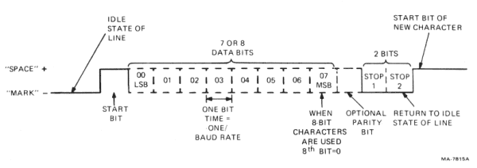
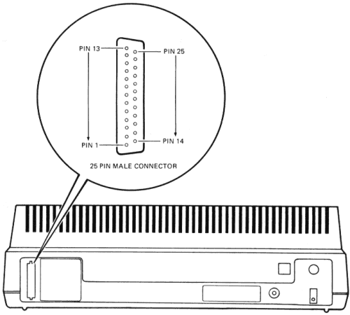
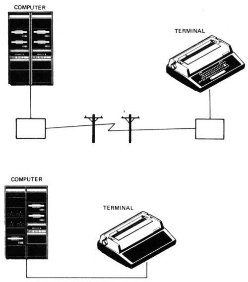

| Introduction | Contents | Chapter 2 |
This chapter describes LA100 communication interfaces and the terminal communication features. The communication features are used to configure the terminals to operate with specific computers. This chapter also discusses the methods of controlling data received by the terminal to avoid input buffer overflows.
The LA100 communicates using serial characters (Figure 1-1). The serial character format for the terminal must match the character format used by the computer. Serial characters are transmitted using a start bit, 7 or 8 data bits, a selectable parity bit and 2 stop bits.
NOTE: If you are using the LA12X-BB Parallel Interface option, refer to the option installation guide for character format information.
The data bits represent a 7 bit character, least significant bit leading. If 8 bit characters are selected, the last data bit is forced to the space (0) condition and the eighth data bit is ignored when receiving characters. The parity bit is operator selectable.
|  |
A break signal is a transmitted space condition for 0.275 seconds ±10 percent. The computer response to the break signal depends on the computer and the software used. If selected, the LA100 sends a break signal when a paper fault occurs.
The terminal operates on full-duplex, asynchronous communication lines. The EIA interface connector is a DB-25 male 25 pin connector mounted on the back of the terminal (Figure 1-2). The LA100 EIA interface signals meet the EIA specification requirements RS-232-C and the International Telephone and Telegraph Consulting Committee (CCITT) recommendation V.24.
NOTE: The 20 mA current loop interface option allows the terminal to be connected directly to a computer up to 305 m (1000 ft) away without the use of a modem.
|  |
Table 1-1 summarizes the EIA connector signals and the following paragraphs explain each signal as used in the LA100. The Communication Feature section explains the effect that the communication features have on the EIA control signals.
This circuit is connected to the chassis of the terminal. It is also connected to external grounds through the third wire of the power cord.
Signals on this circuit represent serially encoded characters that are generated by the terminal.
Signals on this circuit represent serially encoded characters that are generated by the user's equipment.
When the RTS signal is on, the terminal intends to receive data.
This circuit monitors the CTS signal generated by the modem in response to RTS. With modem control selected, the LA100 will not transmit any codes if CTS is not on. With no modem control selected, CTS is always assumed to be on.
The DSR signal is on when the data set is ready. The terminal will not transmit or receive data until this signal is on. With no modem control selected, DSR is always assumed to be on. The DSR indicator lights when the DSR signal is received.
This circuit establishes a common ground reference potential for all interface circuits. This circuit is permanently connected to the protective ground circuit.
When the RLSD signal is on, it indicates that the modem has received the data carrier signal. The terminal will not receive data until this signal is on. With no modem control selected, RLSD is always assumed to be on.
With restraint selected, the on condition of BUSY indicates that the computer should temporarily stop sending data. When BUSY goes off, the computer can resume sending data.
With speed mode selected, the terminal operates at the operator selected baud rate when SPDI is off. The terminal operates at 1200 baud regardless of the operator selected rate when SPDI is on.
Same as restraint (pin 11)
When the DTR signal is on, the terminal is capable of receiving data. When DTR is off, the terminal is processing a disconnect or the terminal is local.
With speed mode selected, and the receive baud rate of the terminal is 1200 baud or higher, the terminal turns SPDS on. Otherwise SPDS is kept off.
| Pin | Name | Mnemonic | CCITT/EIA Designation | Source |
|---|---|---|---|---|
| 1 | Protective Ground | PGND | 101/AA | |
| 2 | Transmitted Data | TXD | 103/BA | LA100 |
| 3 | Received Data | RXD | 104/BB | User |
| 4 | Request to Send | RTS | 105/CA | LA100 |
| 5 | Clear to Send | CTS | 106/CB | User |
| 6 | Data Set Ready | DSR | 107/CC | User |
| 7 | Signal Ground | SGND | 102/AB | |
| 8 | Receive Line Signal Detect | RLSD | 109/CF | User |
| 9 | No Connection | |||
| 10 | No Connection | |||
| 11 | Restraint | BUSY | LA100 | |
| 12 | Speed Indicator | SPDI | CI | User |
| 13 | No Connection | |||
| 14 | No Connection | |||
| 15 | No Connection | |||
| 16 | No Connection | |||
| 17 | No Connection | |||
| 18 | No Connection | |||
| 19 | Secondary Request to Send | SRTS | 120/SCA | LA100 |
| 20 | Data Terminal Ready | DTR | 108.2/CD | LA100 |
| 21 | No Connection | |||
| 22 | No Connection | |||
| 23 | Speed Select | SPDS | 111/CH | LA100 |
| 24 | No Connection | |||
| 25 | No Connection |
The following EIA circuits can be physically disconnected by removing a jumper:
When any of the EIA circuit jumpers are removed, the loopback control line test fails. Refer to the jumper removal procedure in the Installation guide to remove any of the EIA circuit jumpers.
The LA100 can be connected to a computer directly or through a common carrier facility (telephone line) as shown in Figure 1-3. The EIA interface or optional 20mA current loop interface can be used in both applications.
When connecting the terminal to the computer through the telephone line, a modem (data set) is needed. The modem changes the serial characters transmitted between the terminal and the computer into signals that can be transmitted over the telephone lines. Several types of modems can be used with the LA100. However, the modem used by the terminal must be compatible with the modem used by the computer.
The type of communication used by the terminal must also be compatible with the computer and the communication system. The type of communication used by the LA100 is operator selectable (SET-UP is used for the Letterwriter 100, communication switches are used for the Letterprinter 100).
|  |
When on-line, the LA100 is connected to the communication line and is capable of receiving and sending data. The terminal communicates with EIA compatible devices on full duplex asynchronous communication lines.
The terminal supports two basic types of full-duplex communication; with or without modem control. Both methods allow data to be transmitted and received at the same time. When full-duplex with no modem control is selected, the data transmission and reception is always enabled when not in local. Full-duplex with modem control requires that both the terminal and the modem recognize the proper EIA signals before transmitting data. Table 1-2 shows the effect of the modem/no modem feature on the EIA control signals.
No modem control allows the terminal to communicate directly with a computer (null modem configurations) or with full-duplex modems that do not support DSR (data set ready) or RLSD (receive line signal indicator).
Modem control allows the terminal to communicate through modems such as Bell 103, 212, Vadic 3400, or equivalent.
| EIA Signal | No Modem | Modem Control |
|---|---|---|
| Key | ||
| Off | Signal off at EIA connector | |
| Active | Signal turns on or off depending on terminal state. | |
| On | Signal on at EIA connector | |
| Inactive | Signal ignored at EIA connector but terminal internally forces signal on. | |
| DTR | active | active |
| RTS | active | active |
| TXD | active | active |
| RXD | active | active |
| DSR | inactive | active |
| CTS | inactive | active |
| RLSD | inactive | active |
A full-duplex disconnect is accomplished by turning DTR (data terminal ready) off for at least two seconds plus the DSR (data set ready) delay time, but no greater than 3.8 seconds. The following conditions cause a full-duplex disconnect.
When the LA100 receives a character (other than the NUL and DEL characters), the terminal stores the character in its 400 character input buffer. When the terminal is ready, characters are removed from the input buffer and printed. If the terminal falls behind by more than 400 characters, the input buffer overflows. If an overflow occurs, the character is lost, a single SUB control character is placed in the input buffer and the bell tone sounds. There are three ways to avoid input buffer overflows.
The XON/XOFF and restraint features are used to prevent input buffer overflows. When XON/XOFF and/or restraint is selected, the terminal constantly monitors the number of characters stored in the input buffer. The terminal signals the computer to stop sending data (sends XOFF control character or sets the restraint signal off) when any of the following conditions occur:
The terminal signals the computer to resume data transmission (sends XON control character or sets the restraint signal on) when any of the following conditions occur:
XON/XOFF and restraint are operator selectable features.
When receiving data at 1200 baud or less, the terminal can keep up with normal character reception. Very short lines and multiple form feeds cannot be printed this fast. Fill characters may be used to slow down the effective data transmission speed in these cases. Fill characters do not enter the input buffer they are stripped out of the data stream upon reception.
The terminal's printhead and form movements (horizontal and vertical) terminal are directly related to the fill time required to slow down the effective data transmission speed. The fill time required to compensate for these movements can be converted to the number of fill characters needed using the following formula.
Fill Time Required
Number of Fill Characters = --------------------------
Character Execution Time
NOTE: NUL is the only recommended fill character even though some other characters may seem to achieve the same result in special cases.
Required fill time for horizontal movement (including tabs and positioning sequences) is determined in the following way.
First figure the actual number of columns moved. Then, allow 15 ms for each of the first 10 columns (30 ms in double-width pitches: 5, 6, 6.6, 8.25) and 5.5 ms for each additional column (11 ms in double-width pitches).
Required fill time for vertical movement (includes linefeeds, vertical tabs, form feeds, and vertical positioning sequences) is determined in the following way.
First convert the number of lines moved to actual distance moved using the following formula.
Number of Lines Moved
Inches Moved = -----------------------
Vertical Pitch
Then allow 38 ms for the first line moved up to 1/6 inch, and 200 ms for each additional inch.
The character execution time is given in milliseconds and is based on a given baud rate. It is the time the computer takes to slow down the effective data transmission speed to the terminal. Character execution times at the applicable baud rates are shown in Table 1-3.
| Baud Rate | Execution Times (msec) |
|---|---|
NOTE: Character execution times are provided for calculation of fill times only. |
|
| 110 | 90.0 |
| 300 | 33.3 |
| 600 | 16.6 |
| 1200 | 8.3 |
| 1800 | 5.5 |
| 2400 | 4.1 |
| 4800 | 2.0 |
| 9600 | 1.0 |
Assumed values: Baud Rate = 1200, Horizontal Pitch = any single width pitch (10, 12, 13.2, 16.5). Also assume that horizontal tab stops are set at columns 9, 17, and 25 and printing begins at column 9. If the next two characters received are TAB TAB, calculate the number of fill characters required in the following way.
First, calculate the number of columns moves using the following formula.
Final Column - Current Column = Number Columns Moved
25 - 9 = 16
Then allow 15 ms per column for the first 10 columns and 5.5 ms per column for the remaining columns.
15 ms × 10 = 150 ms
5.5 ms × 6 = 33 ms
150 + 33 ms = 183 ms
The fill time required is 183 ms.
Next, divide the fill time required by the character execution time found in Table 1-3.
183 ms
Number Fill Characters Required = --------
8.3 ms
The number of fill characters required is 22.04. Round this number off to the next whole number, which is 23. Twenty three (23) fill characters (NUL) should follow the two tabs.
Assumed values: Baud Rate = 1200 baud, Vertical Pitch = 6 lines per inch and paper is set to line 10. Also assume the next characters received are nine line feeds.
First, calculate the actual distance moved using the following formula.
Lines Moved
Number Inches Moved = ----------------
Vertical Pitch
9
1½ inches = ---
6
Then allow 38 ms for the first 1/6 inch moved and 200 ms for the remaining number of inches moved.
200 ms × 1 2/6 inches = 266 ms
266 ms + 38 ms = 304 ms.
The fill time required is 304 ms.
Next, divide the fill time required by the character execution time found in Table 1-3.
304 ms
Number fill characters required = --------
8.3 ms
The number of fill characters required is 36.62. Round this number off to the next whole number, which is 37. Thirty seven (37) fill characters (NUL) should follow the nine line feeds.